The original, as published: DoITPoMS, University of Cambridge, Tribology - the friction and wear of materials. CC BY-NC-SA 4.0, https://creativecommons.org/licenses/by-nc-sa/4.0/. As published, from https://www.doitpoms.ac.uk/tlplib/tribology/ https://www.doitpoms.ac.uk/tlplib/tribology/
It is often desirable for frictional forces and wear rates to be low, because friction increases the work needed to achieve a task and wear is detrimental to component performance and lifetime.
However, not all engineered materials need to have low friction and low wear rates. High friction between shoes and the floor is desirable when walking, and high wear rates are beneficial in metallographic specimen preparation (grinding away and then polishing a surface).
Flat surfaces polished to a mirror finish are not truly flat on an atomic scale, as shown below.
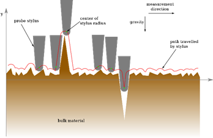
Surface roughness can be quantified using a stylus profilometer, where a fine stylus is moved over the surface. As it does so it rises and falls, giving the surface profile. This method will however produce some smoothing of the true profile, because of the finite dimensions of the stylus tip. This can be seen in the animation below. In the TLP for AFM, under the page called tip related artefacts, a similar concept is demonstrated.
From a profilometer trace, the average roughness, \({R_{\rm{a}}}\), is defined as \({R_{\rm{a}}} = \frac{1}{L}\int\limits_0^L {{\rm{ }}\left| {y(x)} \right|} {\rm{ d}}x\)
where y(x) is the height of the surface at x above the mean line and L is the overall length of the profile. The mean line is defined by having equal areas of the profile above and below it. An exaggerated example is shown below.
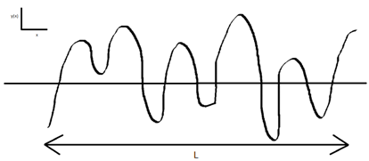
For metals, polished surfaces typically have \({R_{\rm{a}}}\) values of 0.1–0.4 mm.
Contact between surfaces occurs only at certain points, called asperities (circled below). Frictional force and wear originates at these asperities. These only cover a very small fraction of the total surface area - typically < 1%, but this will vary with factors such as the load on the surfaces. For contact between rubbery plastic surfaces and nominally smooth surfaces (e.g., polished glass), the contact area can approach that of the nominal area. Asperity contact can be either plastic (most metals) or elastic (most plastics and ceramics) and this cannot be altered by changes in the load.
Due to asperities the true area of contact is much less than the nominal area of contact. The true area of contact is related to the frictional force, so it is useful to be able to find an estimate for it. Click the link below for the derivation of an estimate for this and to see what determines whether asperities make contact elastically or plastically.
This concept of asperities is demonstrated by Newton’s rings:
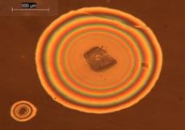
A transparent rubbery polymeric phone casing was placed on a mobile phone with a glass back. In some regions concentric rings of different colours were visible - Newton’s rings. The images shown were obtained by viewing this with an optical microscope in reflected light mode.
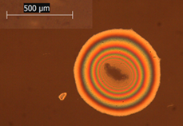
The rings appear where there is dust between the polymer and the glass surfaces. There is substantial contact between the two surfaces here but there is an air gap where adjacent regions on the polymer and the glass are not in contact . This causes the appearance of Newton’s rings.
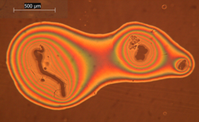
The formation of Newton’s rings can be understood by considering a plano-convex lens placed on a glass slide (effectively a single asperity). An air film of increasing thickness away from the contact point is formed. If white light is used concentric rings of different colours are seen, as is shown in the images.
Newton’s rings are formed due to interference between light waves reflected from the top and bottom surfaces of the air film (see below). The bright rings are where the waves superpose in phase (path difference of a whole number of wavelengths) and the dark fringes are where the waves superpose in antiphase (path difference is an odd number of half wavelengths). See the birefringence pages in the liquid crystals TLP for a more in-depth explanation of a very similar concept. The rings are circular when the lens is perfectly spherical – which, as the images above show, can be a good first approximation of real situations.
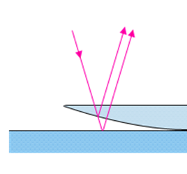
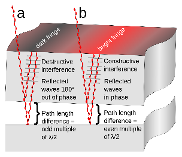
Click here for an estimate for the true area of contact
Friction is the resistance encountered by one body moving over another.
As seen previously when two solid surfaces are placed together, contact will occur only at asperities. Frictional forces and wear originate due to the interlocking of asperities because, in order for the surfaces to move relative to each other, asperities must deform and/or fracture, and adhesive forces must be overcome. In general, the greater the proportion of the surface that is in asperity contact, the greater the frictional force.
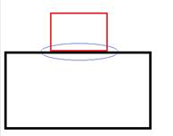
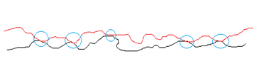
These diagrams show that the true area of contact is far less than the apparent area of contact (asperities circled).
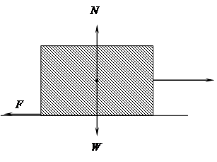
For the above block to be able to slide to the right, the applied horizontal force must be greater than the frictional force, F.
Now, \[F \le {\rm{ }}\mu N\]
where N is the normal load and μ is the coefficient of friction. It is a common observation that frictional force needed to initiate motion is greater than that needed to maintain it, i.e., μstatic > μdynamic. The higher the value of μ, the steeper the slope can be for the box to remain stationary:
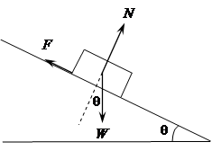
When the object is stationary:
Resolving parallel to the normal force, N, we have:
N = W cos θ
Resolving parallel to the frictional force, F, we have:
F = W cos (90° - θ) = W sin θ
Hence,
\[\frac{F}{N} = \tan \theta \]
and so the limiting angle at which the object remains on the slope, θcrit, therefore determines the coefficient of friction, μ:
μ = tan θcrit
[An analogous problem arises when leaning a uniform ladder against a smooth vertical wall where the bottom of the ladder is in contact with rough ground.]
Experimental data showing the invariance of the coefficient of friction with the apparent area of contact for wooden sliders on an unlubricated steel surface (Hutchings, p. 24; from E. Rabinowicz, Friction and Wear of Materials, 1965).
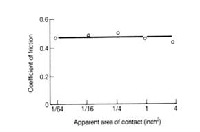
This can be understood by considering a brick on a table. When the large side of the brick is in contact with the table the apparent contact area is large and there are many asperities that support the load. When the smaller side is in contact the apparent contact area is lower and there are fewer asperities. This causes a greater effective normal load on each asperity (same weight but fewer asperities) which results in the area of each asperity being larger. This means the true contact area is essentially the same, hence so is the friction.
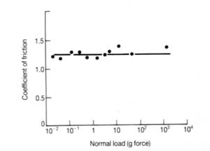
Experimental data showing the invariance of the coefficient of friction with normal load for the unlubricated sliding of steel on aluminium. μ is unaffected but the frictional force increases.
However there are special cases where μ experiences a transition in value as the normal load changes:
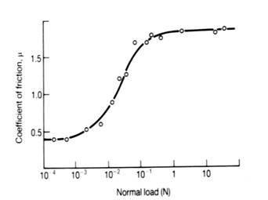
The variation of the coefficient of friction with applied normal load for copper sliding against copper. At low loads, the two metal surfaces are separated by thin oxide films. At high loads, metallic contact occurs between copper asperities as the oxide films are penetrated (Hutchings, p. 37; from J.R. Whitehead, ‘Surface deformation and friction of metals at light loads’, Proc. Roy. Soc. Lond. A201, 109-124, 1950). A high coefficient of friction results because of the plastic deformation of the contacting metallic surfaces. μ is independent of load except at the transition region.
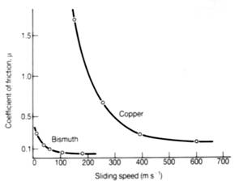
The effect of sliding speed on the coefficient of friction for pure bismuth and pure copper sliding against themselves (Hutchings, p. 42; from F.P. Bowden and D. Tabor, The Friction and Lubrication of Solids, Part II, 1964). At very high speeds, the dissipation of frictional work can raise the temperature at the interface to beyond the melting point of the material involved. Sliding then takes place under hydrodynamic lubrication conditions (see lubrication).
Typically, μ » 0.4-1.5 for one metal sliding against another.
The coefficient of friction, μ, is determined by the behaviour of asperity contacts. Adhesive forces which develop at asperity contacts and deformation forces which are needed to plough the asperities of the harder surface through the softer surface are important.
Adhesion arises from the attractive forces which are assumed to operate at asperity contacts. Adhesive forces between metals can be greater than the cohesive forces in the softer metal – this is important for wear as it can result in material being removed from the softer surface.
Ploughing forces arise since asperities will deform when the surfaces move relative to one another. The animation shows plastic deformation occurring, so applies to most metals.
In addition, an important factor in the friction of ceramics is the extent of fracture on the sliding surfaces. Fracture leads to increased friction, since it provides an additional mechanism for the dissipation of energy.
Oxide films affect μ. Friction between oxide surfaces, or between oxide and bare metal is almost always less than between surfaces of bare metal. Strength and thickness of oxide films are therefore important, as a weaker oxide film which can be sheared more easily will give a low μ, and a thicker film will make contact between the metals themselves less likely and so a lower μ is more probable.
These models give similar results, the key points being that:
\[\mu \approx \frac{1}{6}\] and \[\mu \propto \frac{{{\tau _{\rm{i}}}}}{{{\sigma _{\rm{y}}}}}\]
A consequence of these models is that films of low shear strength deliberately interposed between the surfaces lower μ considerably – this is the principle behind lubrication.
Lubrication is the process of reducing friction between touching surfaces moving relative to each other by introducing a lubricant between the surfaces, which is a material with a lower shear strength than the surfaces.
Lubricants do not necessarily completely prevent asperities, but they reduce their number and weaken their junctions. So lubrication also reduces the rate of sliding wear.
μ for many dry engineering materials is rarely below 0.5 and in most cases is significantly higher. Such high values would lead to large frictional forces and hence energy losses (and almost certainly high wear rates). With lubrication μ can be very low (» 0.001), which is why lubricants are widely used.
Good lubricants have high pour points (the lowest temperature at which an oil will flow), high viscosity indices (see later) and good resistance to oxidation.
Mineral Oils:
Commercial mineral oils are based on several different hydrocarbon species with mean molecular weights between 300 and 600. Examples are pariffinic oils, which have a predominance of paraffin-like species, i.e., long-chained hydrocarbons with either straight or branched chains, as shown schematically below.
Synthetic Oils:
These have fewer impurities than mineral oils, but are significantly more expensive. They are used when relatively high or low temperatures or loads are to be experienced in service, or if low flammability is essential. Examples are synthetic hydrocarbon oils (SHCs) and silicones (below).
Solid Lubricants:
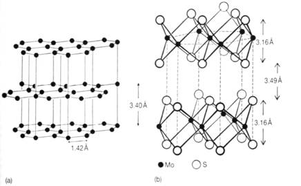
These can be used at higher temperatures. They have a layered structure with weak intermolecular forces between layers, allowing them to slide easily relative to each other (low shear strength) thus giving lubricant properties. To work best the layers should be oriented parallel to the surface and in the direction that the motion will occur, so that on movement the layers can slide over each other easily. In the adjacent diagram the crystal structures of two common solid lubricants are shown: (a) graphite and (b) molybdenum disulphide.
Solid lubricants can be used to produce ‘self-lubricating’ systems which do not need an external source of lubrication during the lifetime of the system. Also, they are particularly useful in vacuum technology and space applications, because they do not evaporate away.
The most important property of an oil for lubricating purposes is its viscosity. Viscosity provides a measure of the resistance of a fluid to shearing flow.
Click here for a recap of viscosity.
Additives either prolong the life of a lubricant or increase its viscosity index (VI), preventing the oil from becoming too thin at high temperatures or too greasy at low temperatures. Example include:
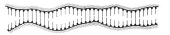
Other additives are detergents, antioxidants and dispersants. Detergents clean and neutralize oil impurities which would normally cause deposits. Antioxidants prevent oils from oxidising. Dispersants prevent contaminants from aggregating into larger groups that hinder the flow of the oil.
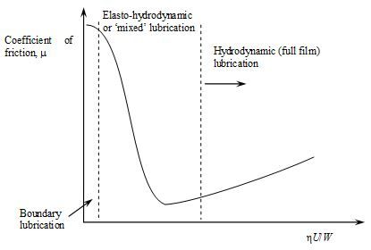
The Stribeck curve: the variation in the coefficient of friction with the dimensionless quantity η U/W for a lubricated bearing. Here, η is viscosity (dimensions of ML-1T-1), U is peripheral speed (dimensions of LT-1), of the bearing and W the load (per unit width) (dimensions of MLT-2/L = MT-2), carried by the bearing (after Hutchings and Shipway, 2nd ed., p. 90). A nice commentary on Stribeck’s work can be found in B. Jacobson, ‘The Stribeck memorial lecture’, Tribology International 36, 781-789 (2003).
Hydrodynamic lubrication– In this regime the surfaces are separated by a fluid film usually thick in comparison with the heights of asperities. The normal load is supported by the pressure within the film. This pressure is generated hydrodynamically.
Elasto-hydrodynamic lubrication / ‘Mixed’ lubrication - Here, the separation of the surfaces is very low – for example, the load on a bearing has increased to bring it into this regime of behaviour because of local line or point contact. In steel components such as gears local pressures can be several GPa. Elastic deformation of bearing surfaces occurs and the oil film behaves almost like a solid – to a good approximation the viscosity of the oil, η, increases exponentially with the pressure, P. As η U/Wfalls, the lubricant film begins to break down and a sharp rise in friction ensues because of direct asperity interaction. Therefore, this is also a regime referred to as being of ‘mixed’ or partial lubrication.
Boundary lubrication - This occurs at very low sliding speeds and/or high contact pressures. Steric forces between polar molecules either present naturally (e.g., in castor oil) or deliberately added to the oil, such as stearic acid or EP additives, prevent or limit contact between asperities of the two surfaces.
Under the most favourable circumstances μ can be very low (e.g., » 0.001), so lubrication is certainly beneficial in reducing wear of materials.
Wear is the deformation and removal of material from its original position on a surface as a result of mechanical action of another surface and/or particles. In general material is removed from a softer surface by a harder surface.
There are two main categories for types of wear process, sliding wear and wear by hard particles. The distinction between the two is not sharp, and there will almost always be a degree of both occurring.
Sliding wear occurs when two solid bodies slide over each other. One or both of the surfaces will suffer wear. An example is tyres in contact with road. Lubrication can dramatically reduce wear rates. Strong interfacial bonds form across asperity junctions. When two dissimilar metals slide against each other the asperity junctions formed are stronger than the weaker of the two metals. This leads to the plucking out of fragments of the softer metal, giving rise to severe wear of the softer metal.
Wear by hard particles can be roughly broken down into abrasion and erosion. In three-body abrasive wear material is removed or displaced from a surface by hard particles rolling between two surfaces ((b) below). In two-body abrasion wear is caused by hard protuberances on one of the surfaces ((a) below). In erosion, wear is caused by hard particles striking the surface, either carried by a gas stream or entrained in a flowing liquid. More hard particles may be generated by this process, or by sliding wear, which can result in increasing rates of wear. Abrasion and erosion can be useful in some circumstances, for example grinding and polishing samples for metallographic examination.
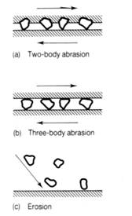
Diagram illustrating abrasion and erosion (Tribology : friction and wear of engineering materials.
Ian M. Hutchings, London : Edward Arnold, 1992, p. 133).
Click here to find the derivation of the Archard equation, an equation that can be used to deduce the severity of sliding wear, from a simple model.>
The Archard equation is
\(Q = \frac{{KW}}{H}\)
where Q is the total volume of wear debris produced per unit distance moved, H is the indentation hardness, W is the total normal load and K is a dimensionless constant of proportionality.
From the above equation it is apparent that wear increases linearly with the contact load, K is a measure of the severity of wear and hard materials wear less than soft materials.
There is little correlation between K and μ. Furthermore, the simple model does not tell us anything about the mechanism of material removal.
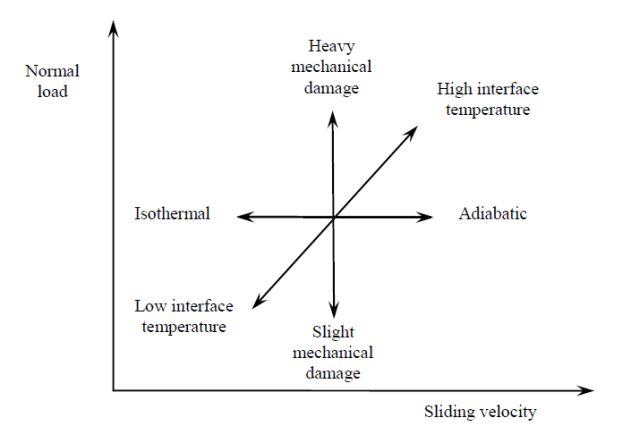
Wear is a complex process involving a number of different mechanisms. The dominant mechanism depends on the conditions - this is shown on the graph below.
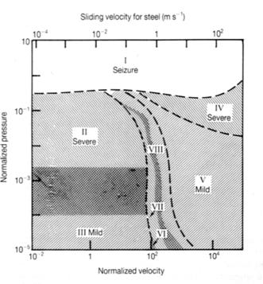
Wear regime map for the sliding of steel on steel (from S.C. Lim and M.F. Ashby, ‘Overview no. 55. Wear-mechanism maps’, Acta Metall. 35, 1-24 (1987)). This is similar for most metals. Eight distinct regimes are identified in this map:
Regime I: Very high contact pressure. Gross seizure of the surfaces: catastrophic growth of the asperity junctions occurs, leading to the real area of contact becoming equal to the apparent area.
Regime II: High loads and relatively low sliding velocity. Penetration of the thin native surface oxide film occurs, leading to high wear rates and metallic debris. Thermal effects are negligible as the sliding velocity is low.
Regime III: Lower loads than regime II, resulting in the oxide not being penetrated. Wear is mild because only oxide debris is formed.
Regime IV: High loads and sliding speeds. Melting occurs as frictional power dissipation is high and thermal conduction is ineffective at removing heat from the interface. The wear rate is high, with metal being removed as metallic droplets.
Regime V: Low contact pressure but high sliding speed. The interface temperature is still high but below the melting point so surface oxidation occurs rapidly. Wear is mild because the debris is oxide.
Regime VI: Hot-spots at asperity contacts occur, causing local oxide growth. Wear debris is from this oxide layer spalling.
Regime VII: Metallic contact occurs at asperities (despite the ability of oxide to grow), leading to severe wear through the formation of metallic debris.
Regime VIII: Martensite forms at the interface through local heating of asperities followed by quenching through heat conduction into the bulk. This provides local mechanical support of the oxide film because martensite has a high strength, helping to reduce the degree of wear. Wear occurs by the formation of oxide debris.
Boundaries on this map are not sharp – they are broad and there is overlap between the regimes.
Hardness - particles with hardness lower than the surface cause little wear.
Shape - angular particles cause greater wear than rounded particles.
Size - larger particles cause more extensive wear as they carry more kinetic energy
Impact speed (for erosion) - particles with greater speed cause more extensive wear as they carry more kinetic energy.
Impact angle (for erosion) - particles hitting at angles close to perpendicular to the surface cause greater erosion.
The particles are often larger than lubricant film thickness, so contact between the particles and the surface occurs, meaning lubrication does not reduce abrasive wear.
Abrasive wear can arise either from plastic deformation forming a groove in a material or by brittle fracture. In brittle fracture, lateral cracks formed beneath a plastic groove produce chips which are subsequently removed from the surface.
Schematics of abrasive wear of (a) ductile material and (b) a material which is brittle.
Materials with high hardness have low toughness (brittle), and visa-versa (ductile), so maximum wear resistance arises through a combination of intermediate values of hardness and toughness.
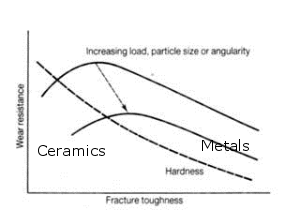
Metals (tougher but less hard) suffer abrasive wear by plastic deformation, ceramics (less tough, but harder) by brittle fracture.
Brittle fracture can be modelled through analogy with indentation of brittle materials. If the variables assumed are W (load), H (hardness) and Kc (fracture toughness):
\[Q = A{W^p}{H^q}{K_{\rm{c}}}^{ - r}\]
with Q being the volume wear rate per unit sliding distance for a constant A, and with W, H and Kc raised to powers of p, q and -r respectively.
Models used for predicting wear rates where brittle fracture is involved predict wear rates higher than would be expected from plastic mechanisms.
These models also predict:
Material removal from each impact is very small but the collective damage can be significant.
Variables which a simple model would expect to affect the volume of material, V, removed from an eroding surface of a plastically deforming material are the velocity, U, of the particles and their mass, m, (together in a kinetic energy term) and the hardness, H, of the material being eroded.
Thus, from dimensional analysis, for this simple model, in which indentation-type behaviour is envisaged, we expect
\[V = \frac{{Km{U^2}}}{{2H}}\]
where K is a dimensionless constant. If we define erosion, E, as
\[E = \frac{{{\rm{mass\;\; of \;\;material\;\; removed}}}}{{{\rm{mass\;\; of \;\;erosive\;\; particles \;\;striking\;\; the\;\; surface}}}}\]
it follows that
\[E = \frac{{V\rho }}{m} = \frac{{K\rho {U^2}}}{{2H}}\]
where ρ is the density of the bulk material. This shows the importance of a high hardness of the surface being eroded for wear resistance. A model for erosive wear by brittle fracture would be similar but would show a high fracture toughness being more crucial for wear resistance.
An example of erosion, with sand particles wearing away at the rock.
A second example is the Chiltern escarpment in Buckinghamshire in the south of England, a boundary between the hard chalk of the Chiltern Hills and the soft clay of the Vale of Aylesbury. Over geological time periods, the clay has worn away faster than the chalk, so that there is a noticeable slope (escarpment) between the valley and its neighbouring chalk hills.
Friction and wear are key concepts. They are experienced in everyday life and can be either detrimental or useful. For example, friction is unwanted when pushing or dragging a heavy object along a floor. Wear can result in components failing and no longer being fit for purpose, e.g., drill bits. However, high frictional forces are desirable for car brakes and grinding away the surfaces of metallographic specimens is most easy when there are reasonably high wear rates
Consider the deformation of a single spherical asperity, of radius r, pressed against a plane surface under a load w:
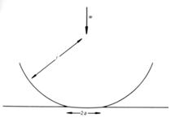
The radius of contact is a. The area of contact, πa2, is A. For purely elastic deformation under conditions of plane strain
\[A = \pi {a^2} = \pi {\rm{ }}{\left( {\frac{{3wr}}{{4E}}} \right)^{2/3}}\] where \[\frac{1}{E} = \frac{{1 - \nu _{{\rm{sphere}}}^2}}{{{E_{{\rm{sphere}}}}}} + \frac{{1 - \nu _{{\rm{surface}}}^2}}{{{E_{{\rm{surface}}}}}}\] and r is the asperity radius
Note that for either the sphere or the material it is indenting, \(E/(1 - {\nu ^2})\) is the Young’s modulus in plane strain.
For perfect plastic deformation (e.g., when the asperity has yielded),
\[A \propto w\]
which is the same as in hardness testing.
Extending the principles found in single asperity contacts to multiple asperities requires a statistical theory of multiple asperity contact by two rough surfaces.
It has been found that
\[A \propto {w^{1 - \delta }}\]
with δ << 1, even for elastic contact. Hence, to a very good approximation, the ratio w/A is almost constant.
From models it has also been able to deduce whether asperities make contact elastically or plastically. The asperity deformation mode is found to be dependent on the value of a plasticity factor, y:
\[\psi = \frac{E}{H}{\left( {\frac{{\sigma *}}{r}} \right)^{1/2}}\]
where E is the Young’s modulus, H is hardness, σ* is the standard deviation of the distribution of asperity heights and r is the asperity radius (assumed in this model for y to be the same for all the asperities).
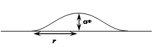
\(\frac{{\sigma *}}{r}\) \(\approx {\rm{ }}\)mean asperity slope
The dependence of asperity deformation mode with \(\psi \) for aluminium with different surface roughness values is shown below.
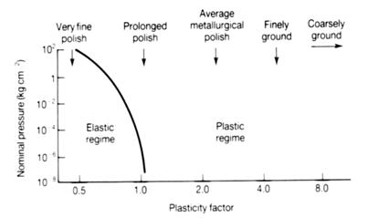
For:
\(\psi \le {\rm{ 0}}{\rm{.6}}\) the behaviour is almost perfectly totally elastic
\(\psi \ge {\rm{ 1}}\) the behaviour is almost perfectly totally plastic
It will only be for very fine polishing (small \(\frac{{\sigma *}}{r}{\rm{ }}\)) that asperity contact between aluminium surfaces will remain elastic. For ‘average’ metallurgical polishes plastic deformation will arise at asperity contacts.
However, for polymers and ceramics,
\[\frac{E}{H} \approx {\rm{ 0}}{\rm{.1 }}{\left( {\frac{E}{H}} \right)_{{\rm{metals}}}}\]
and this leads to a greater likelihood of elastic contact between asperities. This is why wear of ceramics tends to be dominated by brittle fracture of surface material.
The important result from this is that for most surfaces, i.e., for a given σ*, r and surface density of asperities, the deformation mode (elastic or plastic) cannot be altered by changes in the load.
To account for the observed values of μ, we need to take account of the stress system at the contact areas, and consider how this changes as the frictional force is applied.
In a simple model of metal-metal contact, we can imagine that at each asperity contact there is an area of contact, a, that acts like a hardness indentation, with an indentation pressure, P, equal to the hardness, H, of the asperity material. The normal force on the contact, w, is then w = a H.
Summing over all asperity contacts between two surfaces, the total normal force, W = A H, where A is the true area of contact (not the nominal area of contact). We can assume that, to a good approximation, H = 3σy, the uniaxial yield stress.
Using the Tresca criterion, the yield stress in pure shear, k, is half the uniaxial yield stress, σy.
Hence, when sliding is just about to occur, the total shear force, F, is such that
\[F = \frac{{{\sigma _{\rm{y}}}}}{2}A = \frac{{{\sigma _{\rm{y}}}}}{2}\frac{W}{H} = \frac{{{\sigma _{\rm{y}}}}}{2}\frac{W}{{3{\sigma _{\rm{y}}}}} = \frac{W}{6}\]
and so since W is a normal force, we predict that
\[\mu = \frac{1}{6}\]
This simple model gives the correct order of magnitude for a coefficient of friction between two metal surfaces. It also shows that the frictional force is independent of the nominal area and proportional to the load, W, because of the way in which the true area of contact varies as a function of nominal area and applied load.
Measured values are often greater than this. This is due to work hardening (flow stress of the material/asperity will not be constant, it will increase) and/or junction growth (the area of the contact increasing).
If there were a thin interfacial contaminant layer with shear yield stress τi at the contact regions, then a straightforward modification of the above analysis would predict that
\[\mu = \frac{{{\tau _{\rm{i}}}}}{{3{\sigma _{\rm{y}}}}}\]
Note that this model is not relevant to either polymers or ceramics. For polymers, asperities are soft and elastic, so at high contact pressures the true area of contact can approach the nominal area of contact. For ceramics, fracture can arise at the asperity tops, and so the plastic flow model is not appropriate.
When there is no frictional force, the stress state, σ, can be assumed to be of the form
\[\sigma = \left( {\begin{array}{*{20}{c}}{{p_0}}&0&0\\0&0&0\\0&0&0\end{array}} \right)\]
for a normal stress p0. With a frictional force, the stress state can be assumed to take the form
\[\sigma = \left( {\begin{array}{*{20}{c}}{{p_1}}&\tau &0\\\tau &0&0\\0&0&0\end{array}} \right)\]
To obtain plastic flow in this situation, the area of contact, A, increases, to recognise the plastic flow of the asperity arising from the compressive stress imposed on it.
For a yield criterion to be satisfied and plastic flow to occur, p1 = W/A and τ = F/A.
Using the Tresca yield criterion we find
\[\mu = \frac{{{F_{\max }}}}{W} = \frac{1}{{2{{\left( {{{\left( {{\tau _0}/{\tau _{\rm{i}}}} \right)}^2} - 1} \right)}^{{\rm{ }}1/2}}}}\]
where τ0 = shear strength of bulk material and τi = shear strength of weak interfacial film at interface.
If τ0 >> τi, this model predicts
\[\mu \approx \frac{{{\tau _{\rm{i}}}}}{{2{\tau _0}}} = \frac{{{\tau _{\rm{i}}}}}{{{\sigma _y}}}\]
Kinematic viscosity, ν, is the ratio of dynamic viscosity to the density of the fluid at the same temperature. Dynamic viscosity, η, is related to shear stress, τ, and rate of strain, d\(\gamma\)/d\(t\) through the formula
\[\tau = \eta \frac{{{\rm{d}}\gamma }}{{{\rm{d}}t}}\]
Kinematic viscosity is relevant to the dynamics of real fluids; for example, the non-dimensional parameter known as the Reynolds number, \(R\), is defined by the expression
\[R = \frac{{UL}}{\nu } = \frac{{UL\rho }}{\eta }\]
where \(U\) is a typical velocity and \(L\) is a typical length, ρ is the fluid density and ν the kinematic viscosity. \(R\) is the ratio of inertial forces per unit area ρ \(U\)2 to viscous forces per unit area, η \(U\)/\(L\).
For the flow of viscous fluids (e.g., lubricants) around solid objects, \(R\) is low, in which case flow is laminar. For values of \(R\) relevant to the flow of water in narrow pipes, \(R\) can be very large, resulting in turbulent flow.
The SI unit of dynamic viscosity is the Pa s. The unit of kinematic viscosity most commonly used is the centistoke, cSt: 1 cSt = 10-6 m2 s-1.
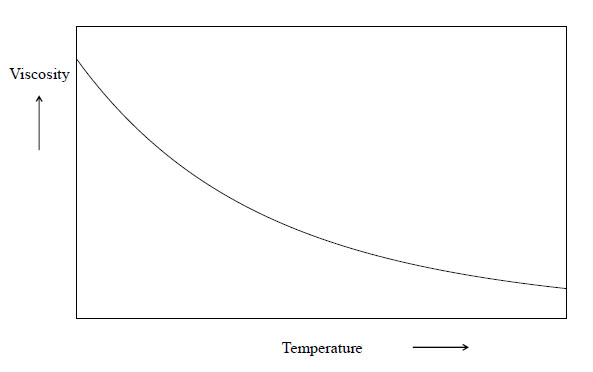
The viscosity of liquids decreases as temperature increases since the increased thermal energy makes it easier to break intermolecular forces and for molecules to uncoil. A schematic variation of the viscosity of a viscous material such as a glass or lubricant as a function of temperature is shown above. Note the sense of curvature.
The viscosity of a lubricant is closely related to its ability to reduce friction. Generally, the least viscous lubricant which still forces the two moving surfaces apart is desired. If the lubricant is too viscous it will require a large amount of energy to move the two surfaces relative to one another and if it is too thin then many asperities will form and friction and wear will increase.
Viscosity index (VI) is a measure of the change of kinematic viscosity with temperature. The higher the VI, the lower the rate of change of kinematic viscosity with temperature.
Many applications require a lubricant to perform across a wide range of temperature conditions e.g. lubricants between engine components must work when the engine is started from cold up to approximately 200°C when it is running.
The best oils will remain stable and not vary much in viscosity over the temperature range experienced for consistent performance within the working conditions, so a high VI is desired.
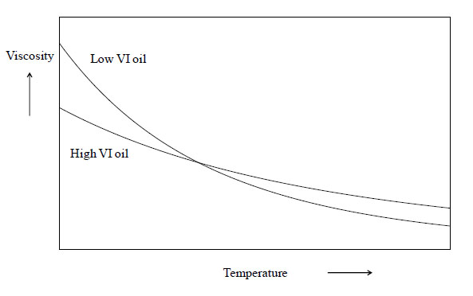
VI improving additives (see next section) are widely used which increase the VIs attainable.
For asperity contact, the local load δW, supported by an asperity, assumed to be circular in cross-section with a radius a, is
δW = P π a2
where P is the yield pressure for the asperity, assumed to be deforming plastically. As assumed when developing a theory of friction, P will be close to the indentation hardness, H, of the asperity (which will be an asperity on the softer surface).
As sliding proceeds, wear will arise from the continuous formation and destruction of asperity contacts.
If, for a particular asperity, the volume of wear debris, δV, is a hemisphere sheared off from the asperity, it follows that
δV = 2/3π a3
This fragment is formed by the material having slid a distance 2a.
Hence, δQ, the wear volume of material produced from this asperity / unit distance moved is simply
\[\delta Q = \frac{{\delta V}}{{2a}} = \frac{{\pi {a^2}}}{3} = \frac{{\delta W}}{{3P}} \approx \frac{{\delta W}}{{3H}}\]
making the approximation that P ≈ H.
However, not all asperities will have had material removed in a sliding operation. The total volume of wear debris produced per unit distance moved, Q, will therefore be lower than the ratio of the total normal load, W, to 3H. It is convenient to write this dimensionless constant of proportionality as a constant K with the factor 3 subsumed into K, giving the so-called Archard equation:
\[Q = \frac{{KW}}{H}\]
Academic consultant: Kevin Knowles
Content development: Luke Diana
Web development: Lianne Sallows and David Brook
This DoITPoMS TLP was funded by the UK Centre for Materials Education and the Department of Materials Science and Metallurgy, University of Cambridge.